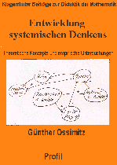

| data |
| home page |
|  |
|
Read the TPC FAQ for answers to frequent questions. What to do when Remote Printing Services doesn't work. Email from the TPC-RP mailing list is also archived for you to read Download software for your computer to help you compose and send a FAX. Tips for using Eudora for Windows or for the Mac TPC is a volunteer organization that needs your help. Software is provided here to set up a fax server (Cell) and provide fax coverage in your local area. |